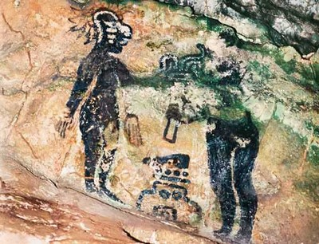
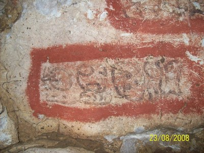
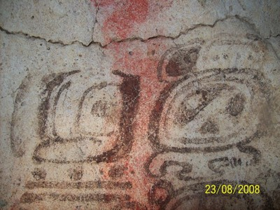
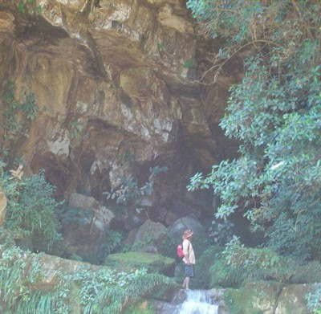
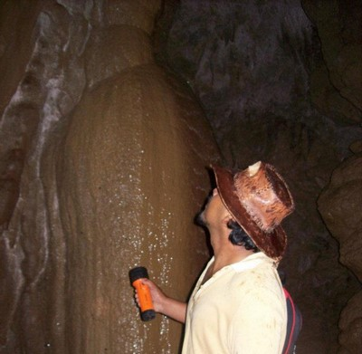

Conformado por 3 cuevas ubicadas en la cima de una montaña en la cabecera del Río Ixteljá. Las tres cuevas contienen restos de cerámica precolombina. Un mural maya del clásico temprano y siete grupos de textos jeroglíficos están pintados en las paredes de la Cueva #1.
Estas son las únicas pinturas en cuevas del Clásico Temprano encontradas en la región Maya y hacen referencia a rituales realizados en la cueva entre los años 300 y 435 d.C. Los mayas ch’oles de esta región creen en un Dios llamado don Juan que habita en Jolja’ y cada año (el 3 de mayo), en la Cueva #1, celebran en su honor el Día de la Cruz.
Se localiza en la localidad de Tumbalá, en la colonia Joloniel
Puede llegar, tomando la carretera Yajalón-Tila, a 15 km encontrará un desvio del lado derecho, continua 5 km y encontrara el puente amarillo (Pueente Hidalgo), luego recorre 13 km aproximadamente y llegara a Tumbala. Después reccore 20 min aproximadamente hacia la colonia Joloniel, y ai encontrara la Cueva
En el lugar usted puede practicar actividades de esparcimientos como:
---Caminatas/expediciones---
---Fotografía---





Posicione el mouse sobre las imágenes